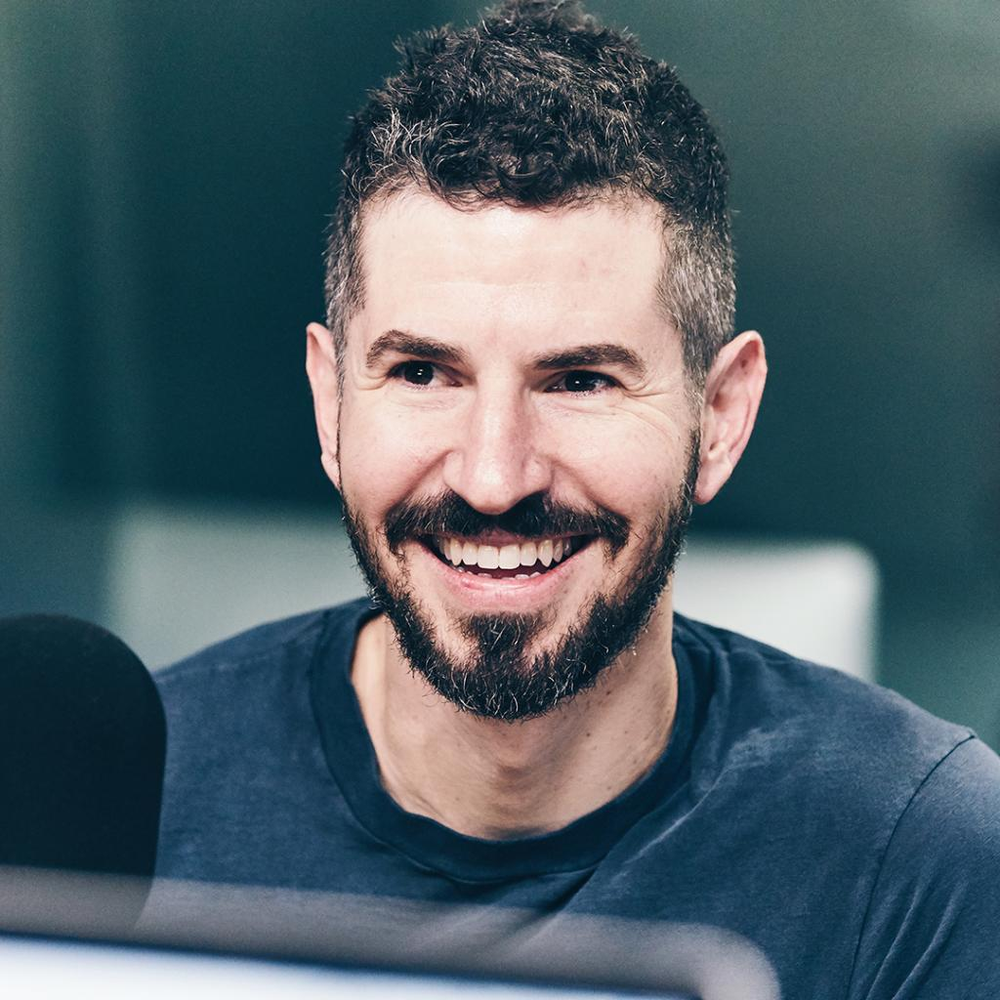

|Brad Delson|
Bradford Phillip Delson (Los Angeles, 1º dicembre 1977) è un chitarrista e produttore discografico statunitense, membro e cofondatore del gruppo musicale Linkin Park.
Di origini ebraiche, Delson ha trascorso i suoi primi anni nel sobborgo losangelino di Agoura. Ispirato da Guns N' Roses, Metallica, Deftones, Duran Duran, Dave Matthews Band e Sunny Day Real Estate, Delson iniziò ben presto a studiare chitarra. Durante l'esperienza liceale, Delson fece parte di un gruppo chiamato Relative Degree insieme al batterista Rob Bourdon. Il gruppo si sciolse dopo solo un concerto.
Durante lo stesso anno terminò gli studi alla Agoura High School e iniziò a frequentare il college dal 1996 al 2000, dove ottenne la laurea all'UCLA con specializzazione in Comunicazione; in seguito rinunciò agli studi di giurisprudenza, per proseguire la sua carriera musicale. Durante gli studi universitari, Delson militò in un gruppo chiamato The Pricks, nella quale era presente anche il suo compagno di stanza e bassista Phoenix. All'epoca si diede il soprannome di "Big Bad Brad" e iniziò a firmarsi con "BBB".
Il 16 settembre 2003 Delson si è sposato con Elisa Sara Boren, dalla quale ha avuto il figlio Jonah Taylor.